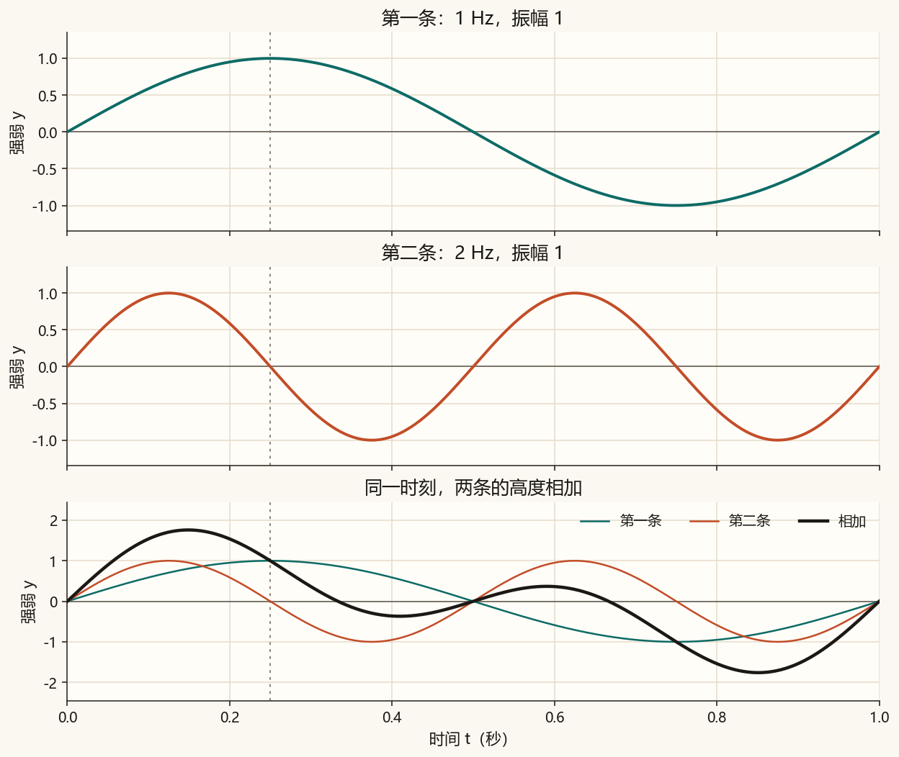
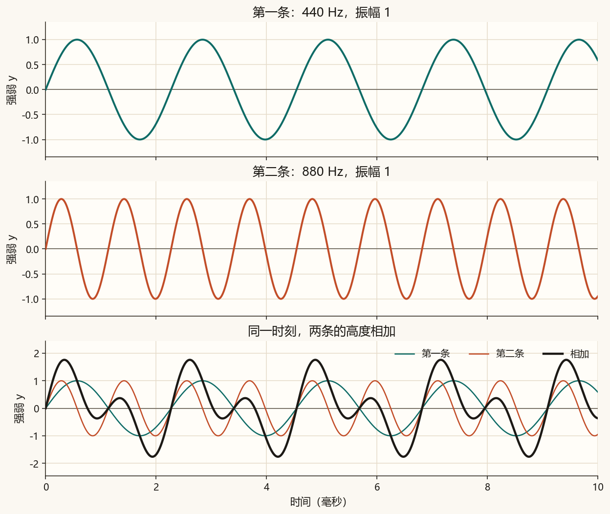
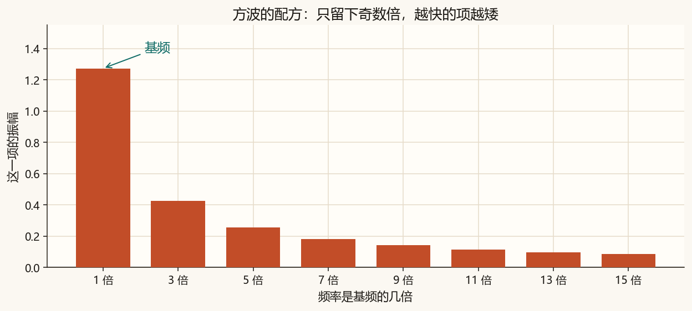
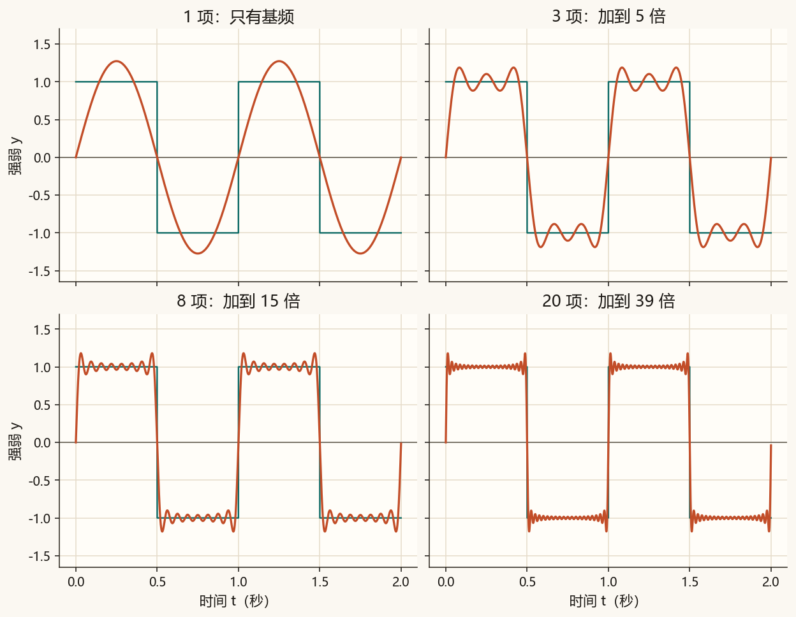

第 2 篇 · 叠加 · 约 45 分钟
一条看起来弯弯曲曲的波，可以是几条正弦在每个时刻把高度加起来。这一篇先加两条，再按一张固定配方把方波拼出来。
第 0 篇的一条正弦，在每个时刻只有一个高度。现在放上两条，规则只有一句：把同一时刻的两个高度加起来，得到新的高度。
y = A₁ sin(2π f₁ t) + A₂ sin(2π f₂ t)
这一篇两条波的相位都是 0，都从中线向上出发。相位以后仍可以改，这里先固定它，专心看相加。
算例 1。 A₁ = A₂ = 1，f₁ = 1 Hz，f₂ = 2 Hz，t = 0.25 秒。第一条的角度是 π/2，高度是 1。第二条的角度是 π，高度是 0。相加得 1。慢的那条在波峰，快的那条正好过零，结果就等于慢的那条。
算例 2。 时间改成 0.125 秒。第一条高度是 sin(π/4) ≈ 0.707，第二条高度是 sin(π/2) = 1。相加约 1.707，比任何一条单独都高。

第一条固定为 1 Hz、振幅 1。拖第二条的频率和振幅。纵轴固定在 −2.3 到 2.3，所以两条叠高时你能看见结果冒出去。
先把第二条振幅拖到 0，深色曲线会和青色重合。再拖回 1，并把频率改成 3：1 秒里，第二条完成 3 次来回，相加后的形状又变了。
图 2-1 用 1 Hz 和 2 Hz，是为了能数清来回。声音里用同样的比例：880 = 440 × 2。画出来仍然是「一条慢的加上一条快一倍的」，只是整段被压进几毫秒，耳朵才听得见。

播放前把音量调小。每段大约 1 秒，听到稳定的声音即可。
只有 440 Hz：
只有 880 Hz。它高八度，听起来更高，仍是音名 A：
440 Hz 加上 880 Hz。两倍频率叠在一起，听感像同一个音更亮：
把 880 换成 660（440 的 1.5 倍）。这次能分开听出两个音高：
方波在半个周期里停在高度 1，另外半个周期停在 −1。它也可以写成很多条正弦相加。配方有三条规矩：
y = (4/π) ( sin(2πft)/1 + sin(2π·3ft)/3 + sin(2π·5ft)/5 + … )
在 t = 0.25 秒、f = 1 Hz 时，第一项是 1，第二项是 sin(3π/2)/3 = −1/3。只加这两项：(4/π) × (1 − 1/3) ≈ 0.849。平台还没到 1，所以要继续加 5 倍、7 倍……


拖动项数。1 项就是一条较高的正弦。项数增加后，平顶出现，拐角变陡。
声音用 220 Hz 当基频，比 440 Hz 低八度，这样多加几项也不会超出采样率能记下的范围。振幅再乘 0.4。先听 1 项，它就是纯音；再听 8 项，更快的谐波让声音更亮、更尖。
1 项：
8 项：
练习文件（改 N_TERMS 并重新运行后，刷新本页再听）：
相加的计算就是把同一排时间上的正弦加起来。方波则按奇数倍做循环：
y = A1 * np.sin(2 * np.pi * f1 * t) + A2 * np.sin(2 * np.pi * f2 * t)
total = 0
for k in range(n_terms):
harmonic = 2 * k + 1 # 1, 3, 5, ...
total = total + np.sin(2 * np.pi * harmonic * f * t) / harmonic
y = (4 / np.pi) * totalt 是一整排时间时，这几行照样成立。完整脚本在 code/ch02_sum.py，它还会把课文图和 wav 存下来。
python code/ch02_sum.py终端里应出现「自检通过」，以及「0.125 秒时，1 Hz 与 2 Hz 相加约为 1.707」。生成的课文图是 ch02_sum_slow.png、ch02_sum_fast.png、ch02_square_steps.png、ch02_recipe.png。ch02_my_square.png 和 ch02_square_mine.wav 只跟随 N_TERMS。
若终端中文是乱码，先执行 chcp 65001。图和 wav 照样会保存。
code/ch02_sum.py，把 N_TERMS = 5 改成 1，运行。打开 ch02_my_square.png：应只剩一条正弦，波峰高于青色方波。刷新本页听 ch02_square_mine.wav，它和第 1 项那段纯音相同。N_TERMS 改成 20，再运行。平台更平，拐角更陡，拐角外侧仍有一小截过冲。听起来比 8 项更尖。5，再运行一次。N_TERMS 请用 1 到 40 的整数。项数太大时，最高的谐波会接近采样率的一半，脚本会提示，听感也会走样。
1。第一条在波峰，高度 1；第二条的角度是 π，高度 0。
三分之一。两边都乘过 4/π，比值仍是 1/3。图 2-4 里，3 倍那根柱子大约是 1 倍那根的三分之一高。
图是一条正弦，波峰大约到 1.27。声音是纯音。方波的平顶要等更多奇数倍加上去才出现。
下一篇把同一段波再看一遍：横轴从时间换成频率。图 2-4 的柱子改称频谱，柱高是振幅，相位先不画进去。